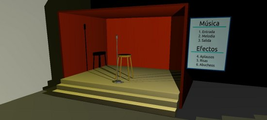

May 18, 2011 · 2 minute read · Comments
Computing

¿Cuántas veces te has peleado con conversores de vídeo horribles? Acudes a Softonic, tecleas “de .avi a iPod”, descargas el que más estrellas tiene, se instala sin preguntar la enésima barra del navegador, resulta que no funciona y además su interfaz es ultra compleja. Es más que probable que lo que busques sea YakiTo, uno de los mejores conversores que he probado. No, no lo digo porque su creador, Sergio García Mondaray, sea un compañero del V CUSL.
Características
- Software Libre: es gratuito y está liberado bajo licencia GPL.
- Multiplataforma: está escrito en Java (contra todo pronóstico es bastante rápido). Funciona perfectamente en Windows, GNU/Linux y Mac.
- Multilenguaje: disponible en español, inglés, alemán y portugués.
- Compatibilidad entre formatos: internamente utiliza el potente ffmpeg.
- Interfaz sencilla: manejo a prueba de torpes, no tiene pérdida.
- Perfiles de conversión: puedes seleccionar el dispositivo en el que deseas reproducir el vídeo para tener la seguridad de que funcionará sin problemas.
- Configuración avanzada: si dominas la conversión de vídeo puedes personalizar el proceso al completo.
- Conversión paralela: para aprovechar los procesadores multinúcleo, podemos convertir varios vídeos a la vez.

Instalación
La instalación de YakiTo es prácticamente trivial, podemos descargarlo desde la sección correspondiente de su web. En el remoto caso de que no sepamos cómo instalarlo podemos seguir los magníficos tutoriales existentes:

Merecido ganador
YakiTo ha sido galardonado con el premio especial al mejor proyecto en el V Concurso Universitario de Software Libre así que os podéis hacer una idea de su calidad. Desde aquí mi más sincera enhorabuena, es un premio merecidísimo que será útil a muchos usuarios.
A mí ya me ha sacado de un apuro.
May 17, 2011 · 1 minute read · Comments
Games development

No estamos adormilados tras la final del V CUSL porque ya se ha publicado un nuevo artículo en IberOgre. En esta ocasión en “Sistemas de partículas” ofrecemos todos los conceptos necesarios para desplegar efectos especiales en nuestros videojuegos desarrollados con Ogre como destellos, humo, fuego y un largo etcétera.
A vista de pájaro, tratamos los siguientes puntos:
- Conceptos básicos sobre los sistemas de partículas.
- Estructura de un sistema de partículas: propiedades, Emitters y Afectors.
- Creación y gestión de sistemas de partículas.
- La herramienta Particle Editor.
- Ejemplo en el que reproducimos varios efectos.
La sección de matemáticas no está olvidada, en cuanto tengamos operativo el módulo de notación matemática en IberOgre se publicarán los tres artículos previstos. Tras eso ya estaremos más cerca de cumplir los objetivos iniciales.
¡Seguimos informando!
May 14, 2011 · 2 minute read · Comments
Games development

El comité de evaluación y la organización del V Concurso Universitario de Software Libre han emitido su veredicto decidiendo que el proyecto IberOgre y Sion Tower sea galardonado con el premio al mejor proyecto de comunidad. No os podéis imaginar lo contento que estoy por el premio, jamás esperaba llegar tan lejos. Por supuesto, os lo tengo que agradecer a todos los que habéis colaborado de una forma u otra, ¡vosotros sois la comunidad!
La lista completa de premios es la siguiente:
- Premio especial: Sergio García por YakiTo.
- Premio al mejor proyecto de accesibilidad: Raúl Jimenez, Anna Peña y Ruben Dugo por GeoRemindMe!
- Premio al mejor proyecto de comunidad: David Saltares por IberOgre y Sion Tower, ¡esos somos nosotros :-)!
- Premio al mejor proyecto de educación: Luis Arce por JavaDiKt.
- Premio al mejor proyecto de innovación: José Antonio Jiménez por Predesys.
- Premio al mejor proyecto de sistemas: Javier Angulo por Terminal Previewer.
¡Enhorabuena a todos! Unos premios merecidísimos.

Sin lugar a dudas, lo mejor del CUSL ha sido la convivencia este par de días en Granada. Poder conocer a los desarrolladores de estos geniales proyectos, charlar, reírnos, pasarlo bien… No tiene precio y compensa todo el esfuerzo con creces. Por ello animo a todo el que dude participar en el CUSL el año que viene, aunque no lleguen a la final pueden cogerse un tren y plantarse en la Universidad que toque sin problemas, vivir este ambiente merece la pena y se aprende muchísimo.
No puedo finalizar el artículo sin darle las gracias a toda la organización del CUSL. Son unas personas muy abiertas, han estado atentos a todo y han invertido tiempo y sudor para que esto salga adelante. Gracias a Ana Rey por las fotos (Creative Commons 2.0 by-sa).
¡Nos vemos en la !BarraLibreCamp de Cádiz!
Editado: si queréis colaborar con la difusión del V CUSL, podéis darle un meneo a la noticia.
May 10, 2011 · 1 minute read · Comments
Games development

Acabo de publicar un nuevo artículo en IberOgre titulado “Extender la gestión de recursos, audio”. Es un completo texto en el que se exponen todos los conocimientos necesarios para integrar los recursos de tu propio juego (niveles, audio, scripts de IA, etc) dentro del sistema de gestión de recursos de Ogre. La teoría se lleva a la práctica creando un sistema de audio sobre SDL, característica inexistente en Ogre de forma inicial.
Los contenidos de forma esquemática son:
- Instalación de SDL y SDL_mixer en GNU/Linux y Windows.
- Inicialización y cierre de SDL.
- Conceptos sobre la extensión del sistema de recursos.
- Primer ejemplo: música.
- Segundo ejemplo: efectos de sonido.
- Ejemplo final: escenario de monólogos en el que tomamos el papel del regidor. Podemos reproducir las melodías del supuesto programa o añadir efectos de público como risas o aplausos.
El sistema de audio está tomado del que posee Sion Tower, la música proviene de Jamendo y los efectos de The Freesound Project. Como siempre, se aceptan cualquier tipo de comentarios.
May 9, 2011 · 1 minute read · Comments
Games development

Un pequeño apunte, se acaba de publicar una entrevista que me hicieron en el blog Desarrolladores de videojuegos sobre IberOgre y Sion Tower. Se trata de una comunidad hispanohablante que publica artículos, tutoriales y mucho material relacionado con el desarrollo de videojuegos. Hablamos principalmente sobre la concepción y el desarrollo de mi proyecto actual aunque también tocamos temas como los juegos independientes o la formación. Quiero agradecerle a Epifanio Suárez su tiempo y el espacio que me ha concedido en su página, esto contribuirá a la difusión de IberOgre y Sion Tower.